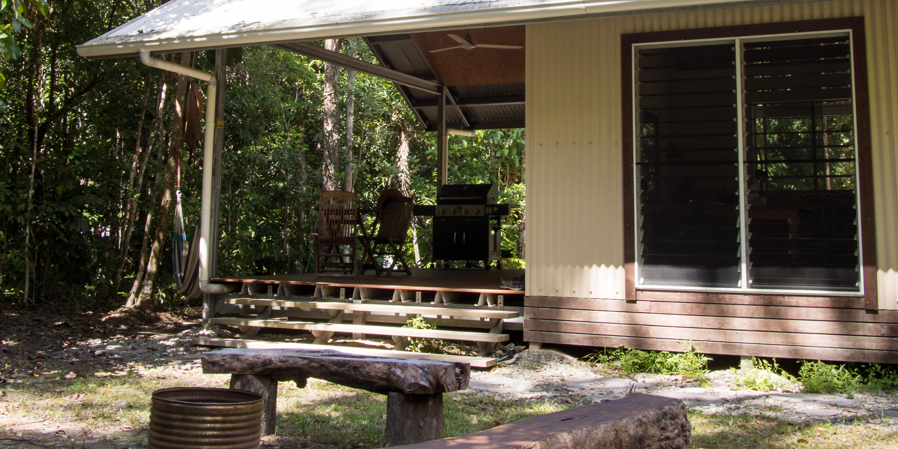
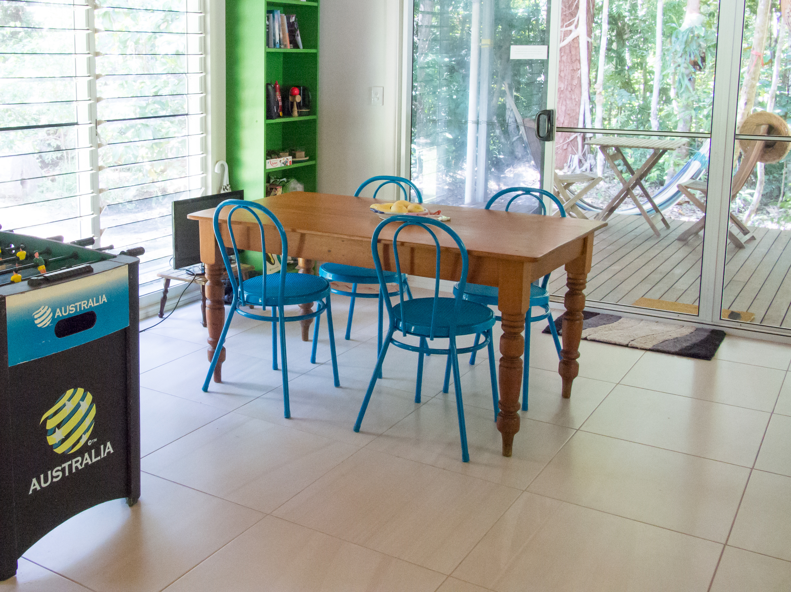

Moo Creek is entirely reliant on solar power and rainwater so we ask that guests are mindful of power and water usage during their stay. We also have a generator as a back up for power. While it doesn't need to be used very often you should note that as the property is in a rainforest we do experience periods of cloud and rain and therefore at times this will necessitate the running of the generator for power. There is no mobile reception or wifi available on the property which adds to the feeling of being able to totally switch off from it all. There is mobile reception available just a few minutes drive up the road however if needed. We provide books, movies and games for guests as well as all products including shampoo etc. We would also recommend that guests shop for groceries prior to heading into the Daintree (There is a Woolworths in Mossman) as there are very limited options for groceries once you have crossed over the river.

Moo Creek sleeps five at most, with one king bed in the bedroom, a double futon, and a single bed in the living area.
Moo Creek is located in the Daintree Rainforest at Cow Bay. Moo Creek is approximatly;
Moo Creek accepts bookings year round, with a two night minimum stay. Book now through AirBnB.